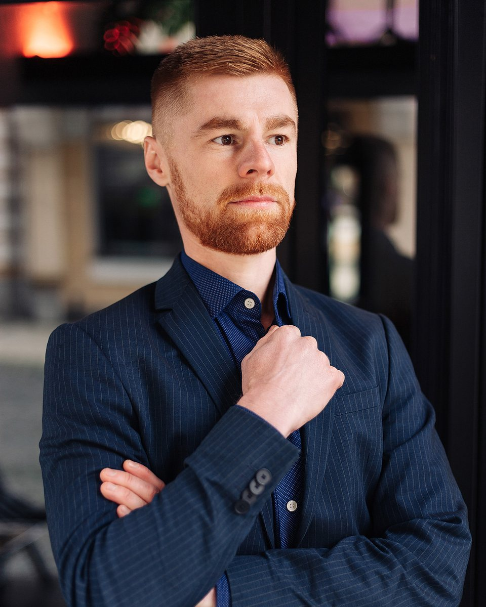

Head of Marketing · дорогі продукти · довгий цикл угоди
80% річного плану продажів за 9 місяців — на 60% бюджету
Маркетингова вартість угоди — на 25% нижча за план. Рахую маркетинг як власник: 11 років свого бізнесу, 6 — у маркетингу.
+38 067 457 97 26antonchepuryshkin@gmail.comTelegram @Anton_lucky_manСайт з кейсами: anton-chepuryshkin.github.io/anton-head-cv

Специфікація
Результати в DFD, грудень 2025 — вересень 2026
80%До кінця вересня компанія виконала 80% річного плану продажів на 2026 рік, витративши 60% маркетингового бюджету: вартість угоди — на 25% нижча за план.
2 000+Органічних підписників у Telegram-воронках.
$0Вивів засновника в спікери: $0 замість $3–5k за участь.
×4Конверсія ліда в кваліфікований: 5% → 20%.
×6Конверсія кваліфікованого ліда в перегляд: 2% → 12%.
65 тис.Переглядів відео на YouTube за форматом з AI-трендвотчінгу.
6 + 2Команда: 6 людей і 2 підрядники.
Етапи
Досвід
12.2025 — 09.2026
DFD (Diachuk Family Development) — Head of Marketing
Девелопер котеджних містечок під Києвом: Montana City (комфорт+), Zoloche Provance (бізнес), Золочів Ліс (преміум)
Збільшив конверсію: лід → кваліфікований з 5% до 20%, кваліфікований → перегляд з 2% до 12% — через контент, що формує попит.
Синхронізував маркетинг і продажі: спільний критерій якісного ліда, причини відмов у CRM. Впровадив наскрізну аналітику від трафіку до угоди і бюджет план-факт.
Спланував і провів перезапуск Gran Montaña → Montana City під розширення з 5 до 20 га: ребренд, новий сайт, комунікація інфраструктури, кампанія запуску — борди, таргет, контент-серія.
Організував благодійне барбекю із засновником: 25+ гостей, збір на дрони-перехоплювачі; один з гостей купив будинок.
Побудував власні медіа з AI-продакшном: AI-відео в Higgsfield і Seedance замість постановочної зйомки (економія від $10 000 і 1–2 місяців), AI-трендвотчінг — 65 000 органічних переглядів на YouTube, AI-контент для воронок — 2 000+ підписників.
Вибудував особистий бренд засновника: тепер його запрошують спікером безкоштовно, а не за $3–5k за участь.
Керував командою з 6 людей і 2 постійних підрядників. Перебудував оргструктуру: ролі, KPI, OKR і звітність по кожному напряму.
Запит
Що шукаю
Роль Head of Marketing у компанії з дорогим продуктом і довгим циклом угоди — нерухомість, фінанси, освіта, авто, преміальні послуги, — де маркетинг рахують угодами, а не охопленнями.
2022 — 2025
Slots City — Traffic Manager
iGaming — одна з найконкурентніших ніш performance-маркетингу
Залучив 110 000+ цільових підписників у Telegram-канал (найкращі зв'язки — по $0,3) і утримував ERR понад 25% через ігрові механіки й ситуативний контент.
Отримав срібну кнопку YouTube: 20 000+ нових підписників на місяць. Знизив вартість підписника з $2 до $1,2.
2020 — 2022
«Дом еко-хутра» — засновник
Власний e-commerce проєкт
Запустив проєкт з нуля: аналіз попиту й конкурентів, сегментація ЦА, лендінг з магазином, Instagram і Facebook. Знизив CPL на 40% через багатоетапний прогрів і нативні креативи в Meta.
Вийшов на друге місце за обсягом закупівель у постачальника з першого сезону — обігнав магазини, які працюють по 10 років.
2011 — 2020
Власний бізнес: будинки й ремонт під ключ
Власник
Побудував 5 будинків і зробив квартири під ключ — найбільші проєкти. Керував кількома бригадами по 3–6 людей і підрядниками: організація процесів і людей.
Сам вибудував лідогенерацію: запустив лендінг із квізом для кваліфікації лідів і знизив вартість ліда.
Система
Як я будую маркетинг
01Стратегія
Дослідження та сегментація ЦА, позиціонування, медіаплан.
02Залучення
Meta Ads, Google Ads, Telegram Ads, YouTube Ads.
03Прогрів
Контент, що знімає заперечення до першої розмови: YouTube, Telegram, чат-боти.
04Продажі
Спільний із продажами критерій якісного ліда, причини відмов у CRM.
05Аналітика
Наскрізна аналітика, OKR і звітність по напрямах, бюджет план-факт.
06Бренд
Бренд компанії і засновника, ребренд, зовнішня реклама.
Основа: 11 років власного бізнесу — рахую бюджет як власник.
Команда
Команда і процеси
Команда 6 + 2 підрядники; OKR і звітність по кожному напряму.
Спільний з продажами критерій якісного ліда, причини відмов у CRM.
Швидко закривав позиції: найняв копірайтера, замінив таргетолога.
Швидкість дій. «Ти швидко дієш, тільки поговорили — одразу впроваджуєш, дієш.»
Найм. «Зміг знайти і найняти достойного копірайтера… досить оперативно.»
Комерційний директор
План
Перші 90 днів у вашій компанії
Дні 1–30
Аудит
Аудит і ресерч: воронка від кліку до угоди, обробка лідів і SLA з продажами, канали, бюджет і команда; сегментація ЦА, заперечення, конкуренти. Перші тести реклами.
Карта втрат, критерії SQL і список гіпотез з оцінкою ефекту
Дні 31–60
Система
Покращую комунікацію з клієнтом на кожному етапі воронки: прогрів, чат-боти, фолоапи. Оргструктура відділу під цілі, OKR, KPI і звітність для кожного напряму.
Цілі й KPI по кожному напряму, погоджені з власником; щотижневий звіт по воронці
Дні 61–90
План
Медіаплан і контент-план воронок, які формують попит і закривають заперечення ЦА.
План на рік з прогнозом лідів, зустрічей, угод і бюджетом
Освіта
ДУІКТ, спеціаліст із систем захисту інформації (2010). Курси 2020–2021: Media Buyer Pro (Таргеторіум), Units, Offerleaks.